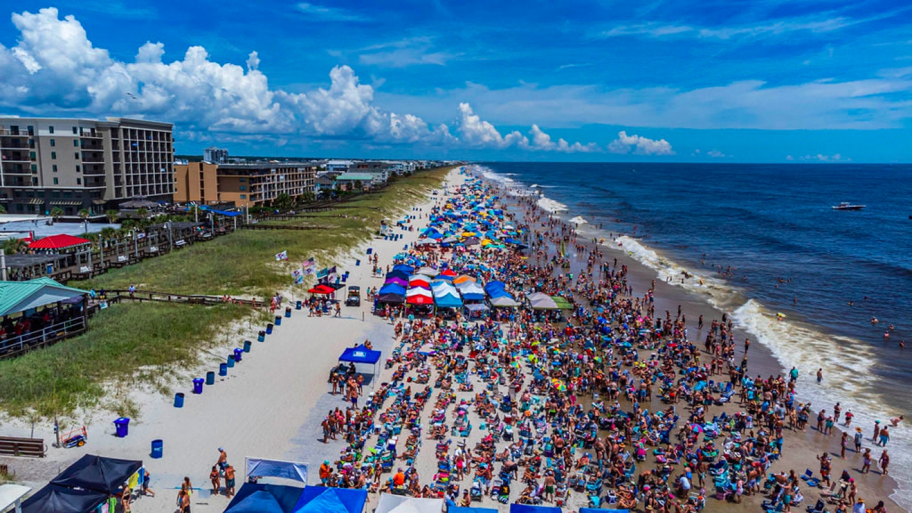
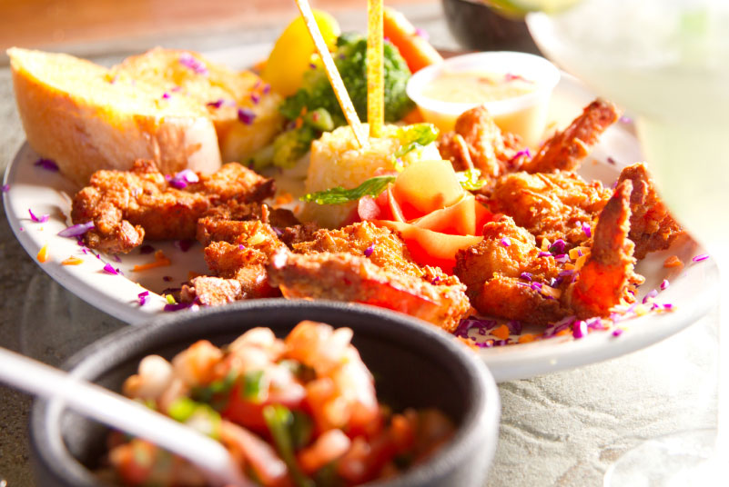

Welcome to Pleasure Island, North Carolina!
Discover our beaches, our history, and our hospitality
Plan your summer vacation at Pleasure Island, home to some of the most beautiful North Carolina beaches. Enjoy the sand, surf, and our quaint, historic beach towns of Carolina Beach, Kure Beach, and historic Fort Fisher.
Come for the day, a weekend getaway, or a long beach vacation. You're sure to discover why the summer never ends on Pleasure Island!
Home to Carolina Beach, Kure Beach, and Historic Fort Fisher
Pleasure Island, encompassing Carolina Beach, Kure Beach and Historic Fort Fisher and home to some of the most unique beach towns and beaches in North Carolina, is nationally recognized as one of the East Coast's leading sports fishing ports with a wonderfully eclectic mix of colorful beach, harbor and waterway-front vacation homes, Oak lined streets and low country-styled neighborhoods, plus a lively downtown Business and Arts District combined with a 1950's era Boardwalk and Amusement Park.
And did we mention award winning seafood restaurants, ocean and river front camping with your 4x4, hiking and biking trails through five hundred year old Sea Pine forests, North Carolina's largest State Aquarium, a restored civil war-era Fort, ecologically diverse wetland marshes and, of course, over seven miles of North Carolina's most beautiful beaches with the gentle Atlantic lapping its shore.
Let Us Help You Plan Your Ideal Pleasure Island Beach Vacation
Pleasure Island is a truly distinctive and affordable vacation destination. Let us help you plan your vacation so you can get the most of what you want during your stay. Browse full profiles for events, activities, accommodations, restaurants, and services and add your favorites to your online itinerary. We promise you will never forget your visit to Pleasure Island, where the summer never ends!
You'll find everything you need to create your own custom itinerary for your Pleasure Island trip here on our site. Check the Event Calendar to see what's happening on the island. Find out Where to Stay and book your reservations now. Then choose ideas for Where to Eat, Where to Play, and any Local Services you might need along the way. We've got all your Pleasure Island vacation planning right here!
Main Events
Events at Pleasure Island are renowned for great fun, great food, and a great experience of our local culture - all year round! Residents, neighbors, and visitors attend Kure Beach and Carolina Beach events year after year, planning their calendars around big festivals including the Seafood Blues and Jazz Festival, the Beach Music Festival, or the Chowder Cook-Off. Be sure to check out Where to Stay, Where to Eat, Where to Play, and Local Businesses during your visit. Hope to see you at an event soon!

- 36th Annual Carolina Beach Music Festival
June 4, 2022 - Fort Fisher Summer Concert Series
July 8, 2022 - Pets in the Park
October 8, 2022 - Cape Fear Kite Festival
November 5, 2022 - Pleasure Island Holiday Shopping Spree
November 18, 2022
Where to Eat
Restaurants and Dining Options in Carolina Beach and Kure Beach
Pleasure Island is home to some of the area's favorite restaurants, including award winning seafood and locally sourced fare. With options ranging from fresh oysters and peel-and-eat shrimp, to waterfront dining, breakfast diners, take-out, bistros, cafes, and sub shops plus yummy pizza, donuts, ice cream and fudge, Pleasure Island is a popular dining destination for area residents and visitors alike. During the off season many restaurants offer great deals for the locals.
Our Pleasure Island Chamber of Commerce members offer a wide range of dining options ideal for everyday residents and visitors to the island (from near or far!). Affordable meals for the family, romantic dining for couples, fun get-togethers with friends - we've got the place for you! Search our member directory to find the off season specials or add all your restaurant ideas to your Trip Planner Itinerary. You'll be sure to get the best of Where to Eat on Pleasure Island!
Where to Stay
Hotels, Rentals, and Campsites in Carolina Beach and Kure Beach
Carolina Beach and Kure Beach on Pleasure Island, NC offer diverse accommodations for every kind of visitor - family vacationers on a budget or out to splurge, couples or small group visitors, business travelers, students on spring break, surfers, honeymooners - you name it. If you have a reason to visit, we have a place for you!
From camping on the beach or at the Carolina Beach State Park, to private, oceanfront rental properties and everything in between (including hotels, motels, and island real estate), our Pleasure Island Chamber of Commerce member directory will help you find the accommodations that best suit your travel plans and budget. Simply search our directory to find the best match and add it to your Trip Planner Itinerary!